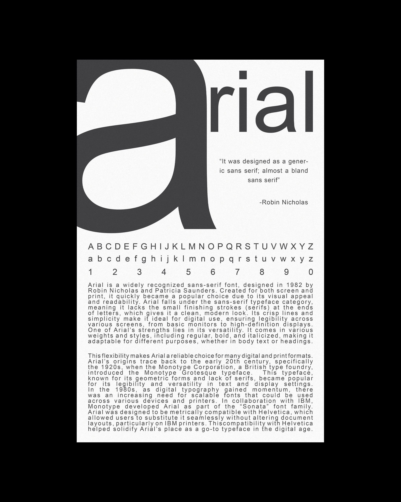
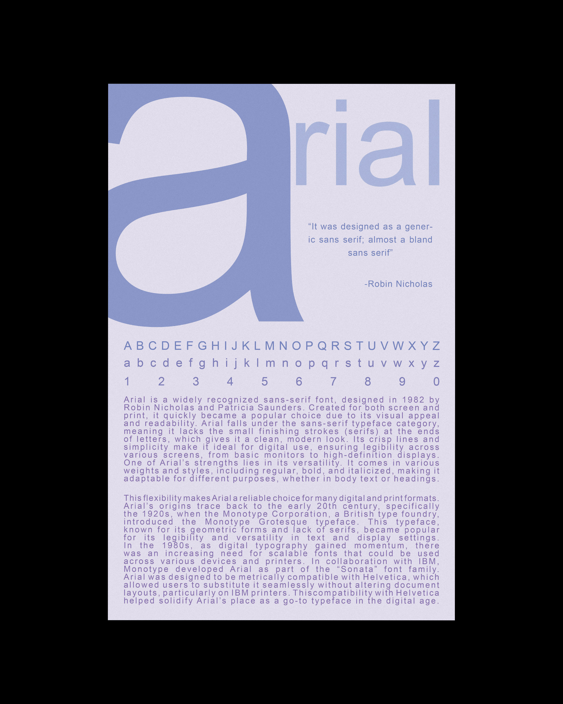
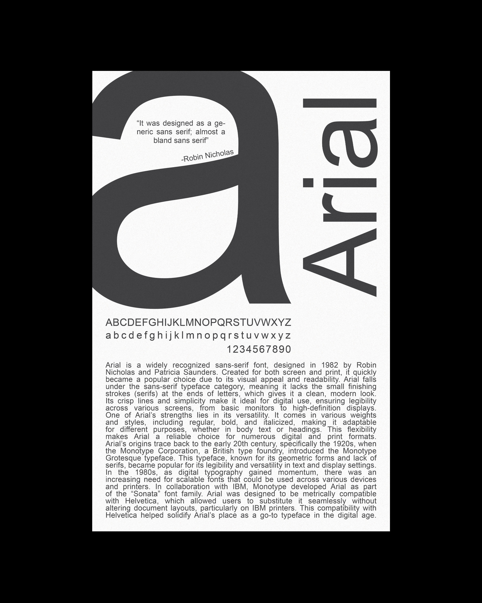
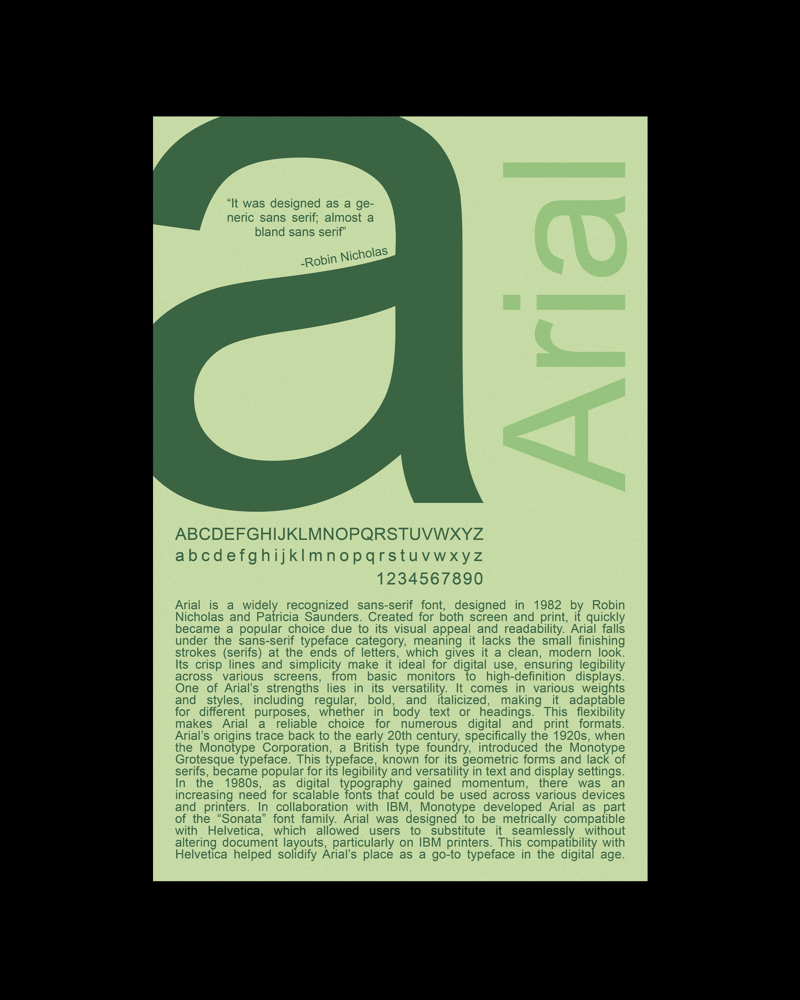

Type Specimen Posters
A poster series exploring Arial through scale, repetition, layout, and color. This project reworks the idea of a traditional type specimen into large-format compositions that focus on the structure and visual character of a single typeface.

Concept
This project explores how a single typeface can create different visual outcomes through hierarchy, spacing, repetition, and contrast. Using Arial as the focus, I created a series of posters that treat typography as both content and image.
The work was inspired by traditional type specimen books, which are used to showcase typefaces and printing capabilities. Instead of presenting the typeface in a neutral or purely informational way, I wanted these posters to feel more expressive and visually engaging while still staying centered on the letterforms themselves.
Process
I experimented with composition, scale, and color to see how the same typeface could shift in tone across multiple designs. The process focused on arranging type in ways that highlighted form, rhythm, and balance while keeping the overall layouts bold and easy to read.
I also created color variations to push the visual system further and compare how color changed the feeling of each poster. This allowed the project to stay consistent in typography while still producing a wider range of visual results.



The final series shows how one familiar typeface can take on different moods through changes in composition and color. Together, the posters balance clarity and experimentation while keeping typography as the central visual subject.